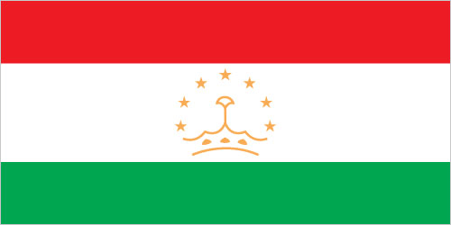
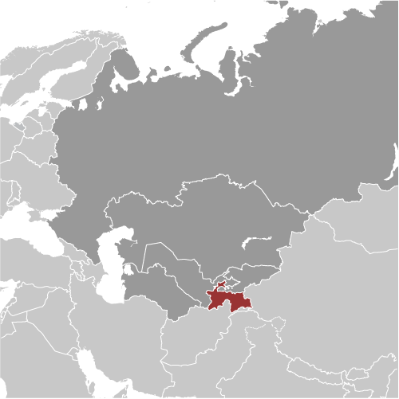
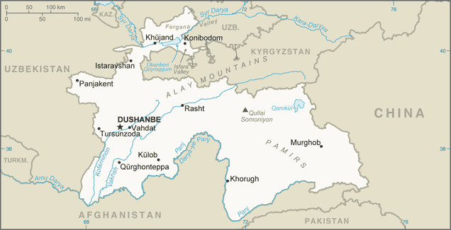

Central Asia :: TAJIKISTAN
Introduction :: TAJIKISTAN
-
The Tajik people came under Russian rule in the 1860s and 1870s, but Russia's hold on Central Asia weakened following the Revolution of 1917. Bands of indigenous guerrillas (called "basmachi") fiercely contested Bolshevik control of the area, which was not fully reestablished until 1925. Tajikistan was first created as an autonomous republic within Uzbekistan in 1924, but the USSR designated Tajikistan a separate republic in 1929 and transferred to it much of present-day Sughd province. Ethnic Uzbeks form a substantial minority in Tajikistan, and ethnic Tajiks an even larger minority in Uzbekistan. Tajikistan became independent in 1991 following the breakup of the Soviet Union, and experienced a civil war between regional factions from 1992 to 1997. Tajikistan has endured several domestic security incidents since 2010, including armed conflict between government forces and local strongmen in the Rasht Valley and between government forces and criminal groups in Gorno-Badakhshan Autonomous Oblast. In September 2015, government security forces rebuffed attacks by the Ministry of Interior led by a former high-ranking official in the Ministry of Defense. President Emomali RAHMON, who came to power during the civil war, used the attacks to ban the main opposition political party in Tajikistan. In May 2016, RAHMON further strengthened his position by having himself designated “Leader of the Nation” with limitless terms and lifelong immunity through constitutional amendments ratified in a referendum. The country remains the poorest in the former Soviet sphere. Tajikistan became a member of the World Trade Organization in March 2013. However, its economy continues to face major challenges, including dependence on remittances from Tajiks working in Russia, pervasive corruption, and the opiate trade in neighboring Afghanistan.
Geography :: TAJIKISTAN
-
Central Asia, west of China, south of Kyrgyzstan39 00 N, 71 00 EAsiatotal: 144,100 sq kmland: 141,510 sq kmwater: 2,590 sq kmcountry comparison to the world: 97slightly smaller than Wisconsintotal: 4,130 kmborder countries (4): Afghanistan 1,357 km, China 477 km, Kyrgyzstan 984 km, Uzbekistan 1,312 km0 km (landlocked)none (landlocked)mid-latitude continental, hot summers, mild winters; semiarid to polar in Pamir Mountainsmountainous region dominated by the Trans-Alay Range in the north and the Pamirs in the southeast; western Fergana Valley in north, Kofarnihon and Vakhsh Valleys in southwestmean elevation: 3,186 melevation extremes: lowest point: Syr Darya (Sirdaryo) 300 mhighest point: Qullai Ismoili Somoni 7,495 mhydropower, some petroleum, uranium, mercury, brown coal, lead, zinc, antimony, tungsten, silver, goldagricultural land: 34.7%arable land 6.1%; permanent crops 0.9%; permanent pasture 27.7%forest: 2.9%other: 62.4% (2011 est.)7,420 sq km (2012)the country's population is concentrated at lower elevations, with perhaps as much as 90% of the people living in valleys; overall density increases from east to westearthquakes; floodsinadequate sanitation facilities; increasing levels of soil salinity; industrial pollution; excessive pesticidesparty to: Biodiversity, Climate Change, Climate Change-Kyoto Protocol, Desertification, Environmental Modification, Ozone Layer Protection, Wetlandssigned, but not ratified: none of the selected agreementslandlocked; highest point, Qullai Ismoili Somoni (formerly Communism Peak), was the tallest mountain in the former USSR
People and Society :: TAJIKISTAN
-
8,468,555 (July 2017 est.)country comparison to the world: 96noun: Tajikistani(s)adjective: TajikistaniTajik 84.3%, Uzbek 13.8% (includes Lakai, Kongrat, Katagan, Barlos, Yuz), other 2% (includes Kyrgyz, Russian, Turkmen, Tatar, Arab) (2010 est.)Tajik (official), Russian widely used in government and businessnote: different ethnic groups speak Uzbek, Kyrgyz, and PashtoSunni Muslim 85%, Shia Muslim 5%, other 10% (2003 est.)0-14 years: 32.33% (male 1,393,804/female 1,343,825)15-24 years: 18.61% (male 799,736/female 776,417)25-54 years: 40.12% (male 1,683,228/female 1,714,507)55-64 years: 5.62% (male 219,043/female 257,066)65 years and over: 3.32% (male 116,511/female 164,418) (2017 est.)total dependency ratio: 62.5youth dependency ratio: 57.1elderly dependency ratio: 5.4potential support ratio: 18.5 (2015 est.)total: 24.5 yearsmale: 23.9 yearsfemale: 25.1 years (2017 est.)country comparison to the world: 1591.62% (2017 est.)country comparison to the world: 7123.3 births/1,000 population (2017 est.)country comparison to the world: 656 deaths/1,000 population (2017 est.)country comparison to the world: 161-1.1 migrant(s)/1,000 population (2017 est.)country comparison to the world: 141the country's population is concentrated at lower elevations, with perhaps as much as 90% of the people living in valleys; overall density increases from east to westurban population: 27% of total population (2017)rate of urbanization: 2.72% annual rate of change (2015-20 est.)DUSHANBE (capital) 822,000 (2015)at birth: 1.05 male(s)/female0-14 years: 1.04 male(s)/female15-24 years: 1.03 male(s)/female25-54 years: 0.98 male(s)/female55-64 years: 0.85 male(s)/female65 years and over: 0.72 male(s)/femaletotal population: 0.99 male(s)/female (2016 est.)22.9 years (2014 est.)32 deaths/100,000 live births (2015 est.)country comparison to the world: 111total: 31.8 deaths/1,000 live birthsmale: 35.9 deaths/1,000 live birthsfemale: 27.5 deaths/1,000 live births (2017 est.)country comparison to the world: 60total population: 68.1 yearsmale: 64.9 yearsfemale: 71.4 years (2017 est.)country comparison to the world: 1692.63 children born/woman (2017 est.)country comparison to the world: 7227.9% (2012)6.9% of GDP (2014)country comparison to the world: 851.71 physicians/1,000 population (2014)5.5 beds/1,000 population (2011)improved:urban: 93.1% of populationrural: 66.7% of populationtotal: 73.8% of populationunimproved:urban: 6.9% of populationrural: 33.3% of populationtotal: 26.2% of population (2015 est.)improved:urban: 93.8% of populationrural: 95.5% of populationtotal: 95% of populationunimproved:urban: 6.2% of populationrural: 4.5% of populationtotal: 5% of population (2015 est.)0.3% (2016 est.)country comparison to the world: 8314,000 (2016 est.)country comparison to the world: 84<1000 (2016 est.)degree of risk: highfood or waterborne diseases: bacterial diarrhea, hepatitis A, and typhoid fevervectorborne disease: malaria (2016)14.2% (2016)country comparison to the world: 12813.3% (2012)country comparison to the world: 565.2% of GDP (2015)country comparison to the world: 114definition: age 15 and over can read and writetotal population: 99.8%male: 99.8%female: 99.7% (2015 est.)total: 11 yearsmale: 12 yearsfemale: 11 years (2013)total: 16.7%male: 19.2%female: 13.7% (2009 est.)country comparison to the world: 72
Government :: TAJIKISTAN
-
conventional long form: Republic of Tajikistanconventional short form: Tajikistanlocal long form: Jumhurii Tojikistonlocal short form: Tojikistonformer: Tajik Soviet Socialist Republicetymology: the Persian suffix "-stan" means "place of" or "country," so the word Tajikistan literally means "Land of the Tajik [people]"presidential republicname: Dushanbegeographic coordinates: 38 33 N, 68 46 Etime difference: UTC+5 (10 hours ahead of Washington, DC, during Standard Time)2 provinces (viloyatho, singular - viloyat), 1 autonomous province* (viloyati mukhtor), 1 capital region** (viloyati poytakht), and 1 area referred to as Districts Under Republic Administration***; Dushanbe**, Khatlon (Qurghonteppa), Kuhistoni Badakhshon [Gorno-Badakhshan]* (Khorugh), Nohiyahoi Tobei Jumhuri***, Sughd (Khujand)note: the administrative center name follows in parentheses9 September 1991 (from the Soviet Union)Independence Day (or National Day), 9 September (1991)history: several previous; latest adopted 6 November 1994amendments: proposed by the president of the republic or by at least one-third of the total membership of both houses of the Supreme Assembly; adoption of any amendment requires a referendum, which includes approval by the president or approval by at least at least two-thirds of the Assembly of Representatives membership; passage in a referendum requires participation of an absolute majority of eligible voters and an absolute majority of votes; note – constitutional articles including Tajikistan’s form of government, its territory, and its democratic nature cannot be amended; amended several times, last in 2016 (2017)civil law systemhas not submitted an ICJ jurisdiction declaration; accepts ICCt jurisdictioncitizenship by birth: nocitizenship by descent only: at least one parent must be a citizen of Tajikistandual citizenship recognized: noresidency requirement for naturalization: 5 years or 3 years of continuous residence prior to application18 years of age; universalchief of state: President Emomali RAHMON (since 6 November 1994; head of state and Supreme Assembly chairman since 19 November 1992)head of government: Prime Minister Qohir RASULZODA (since 23 November 2013)cabinet: Council of Ministers appointed by the president, approved by the Supreme Assemblyelections/appointments: president directly elected by simple majority popular vote for a 7-year term (eligible for 2 terms); election last held on 6 November 2013 (next to be held in November 2020); prime minister appointed by the presidentelection results: Emomali RAHMON reelected president; percent of vote - Emomali RAHMON (PDPT) 83.9%, Ismoil TALBAKOV (CPT) 5%, other 11.1%description: bicameral Supreme Assembly or Majlisi Oli consists of the National Assembly or Majlisi Milli (34 seats; 25 members indirectly elected by local representative assemblies or majlisi, 8 appointed by the president, and 1 reserved for the former president; members serve 5-year terms) and the Assembly of Representatives or Majlisi Namoyandagon (63 seats; 41 members directly elected in single-seat constituencies by 2-round absolute majority vote and 22 directly elected in a single nationwide constituency by proportional representation vote; members serve 5-year terms)elections: National Assembly - last held on 1 March 2015 (next to be held in 2020); Assembly of Representatives - last held on 1 March 2015 (next to be held in 2020)election results: National Assembly - percent of vote by party - NA; seats by party - NA; Assembly of Representatives - percent of vote by party - PDPT 65.4%, APT 11.7%, PERT 7.5%, SPT 5.5%, CPT 2.2%, DPT 1.7%, other 6%; seats by party - PDPT 51, APT 5, PERT 3, CPT 2, SPT 1, DPT 1highest court(s): Supreme Court (consists of the chairman, deputy chairmen, and 34 judges organized into civil, criminal, and military chambers); Constitutional Court (consists of the court chairman, vice president, and 5 judges); High Economic Court (consists of 16 judicial positions)judge selection and term of office: Supreme Court, Constitutional Court, and High Economic Court judges nominated by the president of the republic and approved by the National Assembly; judges of all 3 courts appointed for 10-year renewable terms with no limit on terms, but last appointment must occur before the age of 65subordinate courts: regional and district courts; Dushanbe City Court; viloyat (province level) courts; Court of Gorno-Badakhshan Autonomous RegionAgrarian Party of Tajikistan or APT [Rustam LATIFZODA]Communist Party of Tajikistan or CPT [Miroj ABDULLOYEV]Democratic Party of Tajikistan or DPT [SaidjafFar USMONZODA]Party of Economic Reform of Tajikistan or PERT [Olimjon BOBOEV]Party of Industrialists and Entrepreneurs [Ovezmammed MAMMEDOV]People's Democratic Party of Tajikistan or PDPT [Emomali RAHMON]Social Democratic Party of Tajikistan or SDPT [Rahmatullo ZOIROV]Socialist Party of Tajikistan or SPT [Abduhalim GHAFFOROV]Group 24 [Suhrob ZAFAR] (banned)New Tajikistan Party [Zayd SAIDOV (jailed since 2013)] (unregistered)Vatandor (Patriot) Movement [Dodojon ATOVULLOEV]Youth for the Revival of Tajikistan [Maqsud IBROHIMOV - jailed in 2015] (banned)Youth Party of Tajikistan [Izzat AMON] (unregistered)Islamic Renaissance Party of Tajikistan or IRPT [Muhiddin KABIRI - in exile] (banned)ADB, CICA, CIS, CSTO, EAEC, EAPC, EBRD, ECO, EITI (candidate country), FAO, G-77, GCTU, IAEA, IBRD, ICAO, ICC (NGOs), ICCt, ICRM, IDA, IDB, IFAD, IFC, IFRCS, ILO, IMF, Interpol, IOC, IOM, IPU, ISO (correspondent), ITSO, ITU, MIGA, NAM (observer), OIC, OPCW, OSCE, PFP, SCO, UN, UNCTAD, UNESCO, UNIDO, UNWTO, UPU, WCO, WFTU (NGOs), WHO, WIPO, WMO, WTOchief of mission: Ambassador Farhod SALIM (since 21 May 2014)chancery: 1005 New Hampshire Avenue NW, Washington, DC 20037telephone: [1] (202) 223-6090FAX: [1] (202) 223-6091chief of mission: Ambassador (vacant); Charge d'Affaires Kevin COVERT (since 31 August 2017)embassy: 109-A Ismoili Somoni Avenue, Dushanbe 734019mailing address: 7090 Dushanbe Place, Dulles, VA 20189telephone: [992] (37) 229-20-00FAX: [992] (37) 229-20-50three horizontal stripes of red (top), a wider stripe of white, and green; a gold crown surmounted by seven gold, five-pointed stars is located in the center of the white stripe; red represents the sun, victory, and the unity of the nation, white stands for purity, cotton, and mountain snows, while green is the color of Islam and the bounty of nature; the crown symbolizes the Tajik people; the seven stars signify the Tajik magic number "seven" - a symbol of perfection and the embodiment of happinesscrown surmounted by an arc of seven, five-pointed stars; national colors: red, white, greenname: "Surudi milli" (National Anthem)lyrics/music: Gulnazar KELDI/Sulaimon YUDAKOVnote: adopted 1991; after the fall of the Soviet Union, Tajikistan kept the music of the anthem from its time as a Soviet republic but adopted new lyrics
Economy :: TAJIKISTAN
-
Tajikistan is a poor, mountainous country with an economy dominated by minerals extraction, metals processing, agriculture, and reliance on remittances from citizens working abroad. The 1992-97 civil war severely damaged an already weak economic infrastructure and caused a sharp decline in industrial and agricultural production. Today, Tajikistan has one of the lowest per capita GDPs among the 15 former Soviet republics. Less than 7% of the land area is arable and cotton is the most important crop. Tajikistan imports approximately 70% of its food. Mineral resources include silver, gold, uranium, antimony, and tungsten. Industry consists mainly of small obsolete factories in food processing and light industry, substantial hydropower facilities, and a large aluminum plant - currently operating well below its capacity.Because of a lack of employment opportunities in Tajikistan, more than one million Tajik citizens work abroad - roughly 90% in Russia - supporting families back home through remittances that in 2014 were equivalent to nearly 50% of GDP. Some experts estimate the value of narcotics transiting Tajikistan is equivalent to 30%-50% of GDP.Since the end of the civil war, the country has pursued half-hearted reforms and privatizations in the economic sphere, but the poor business climate remains a hurdle to attracting foreign investment. Tajikistan has sought to develop its substantial hydroelectricity potential through partnership with Russian and Iranian investors, and is pursuing completion of the Roghun dam - which, if built according to plan, would be the tallest dam in the world. However, the project is a sensitive issue for downstream neighbors and faces large financing shortfalls. In 2016, Tajikistan officially contracted with Italian firm Salini Impregilo to construct the dam over a 13-year period for $3.9 billion.Recent slowdowns in the Russian and Chinese economies, low commodity prices, and currency fluctuations are hampering economic growth in Tajikistan. By some estimates, the dollar value of remittances from Russia to Tajikistan dropped by more than 65% in 2015. The government faces challenges financing the public debt, which is equivalent to 35% of GDP, and the National Bank of Tajikistan has aggressively spent its reserves to bolster the weakening somoni, leaving little space for fiscal or monetary measures to counter any additional economic shocks.$26.02 billion (2016 est.)$24.04 billion (2015 est.)$22.43 billion (2014 est.)note: data are in 2016 dollarscountry comparison to the world: 135$6.922 billion (2016 est.)6.9% (2016 est.)6% (2015 est.)6.7% (2014 est.)country comparison to the world: 11$3,000 (2016 est.)$2,900 (2015 est.)$2,800 (2014 est.)note: data are in 2016 dollarscountry comparison to the world: 19317.6% of GDP (2016 est.)12.9% of GDP (2015 est.)13% of GDP (2014 est.)country comparison to the world: 150household consumption: 101.8%government consumption: 16.6%investment in fixed capital: 12.1%investment in inventories: 3.4%exports of goods and services: 11.3%imports of goods and services: -45.3% (2016 est.)agriculture: 27.8%industry: 25.9%services: 46.3% (2016 est.)cotton, grain, fruits, grapes, vegetables; cattle, sheep, goatsaluminum, cement, vegetable oil-3% (2016 est.)country comparison to the world: 1812.295 million (2016 est.)country comparison to the world: 118agriculture: 43%industry: 10.6%services: 46.4% (2016 est.)2.4% (2016 est.)2.5% (2015 est.)note: official rates; actual unemployment is much highercountry comparison to the world: 2031.5% (2016 est.)lowest 10%: NA%highest 10%: NA% (2009 est.)32.6 (2006)34.7 (1998)country comparison to the world: 110revenues: $2.231 billionexpenditures: $2.352 billion (2016 est.)32.2% of GDP (2016 est.)country comparison to the world: 69-1.7% of GDP (2016 est.)country comparison to the world: 8143.5% of GDP (2016 est.)country comparison to the world: 119calendar year5.9% (2016 est.)10.8% (2015 est.)country comparison to the world: 19616% (20 March 2017)6.5% (31 December 2012)country comparison to the world: 925.6% (31 December 2016 est.)25.84% (31 December 2015 est.)country comparison to the world: 9$1.108 billion (31 December 2016 est.)$773 million (31 December 2015 est.)country comparison to the world: 152$1.3 billion (31 December 2016 est.)$934.9 million (31 December 2015 est.)country comparison to the world: 168$1.711 billion (31 December 2016 est.)$1.401 billion (31 December 2015 est.)country comparison to the world: 154$NA$-265 million (2016 est.)$-471.8 million (2015 est.)country comparison to the world: 89$691.1 million (2016 est.)$572 million (2015 est.)country comparison to the world: 167aluminum, electricity, cotton, fruits, vegetable oil, textilesTurkey 27.8%, Russia 15.6%, China 14.7%, Switzerland 9.8%, Iran 6.5%, Algeria 6.5%, Italy 5.8% (2016)$2.604 billion (2016 est.)$2.826 billion (2015 est.)country comparison to the world: 149petroleum products, aluminum oxide, machinery and equipment, foodstuffsRussia 31.2%, China 13.9%, Kazakhstan 12.8%, Uzbekistan 5.2%, Iran 5.1% (2016)$652.8 million (31 December 2016 est.)$494.3 million (31 December 2015 est.)country comparison to the world: 135$5.495 billion (31 December 2016 est.)$5.1 billion (31 December 2015 est.)country comparison to the world: 128$2.272 billion (31 December 2013 est.)country comparison to the world: 113$16.3 billion (31 December 2009)country comparison to the world: 57Tajikistani somoni (TJS) per US dollar -7.8358 (2016 est.)7.8358 (2015 est.)6.1631 (2014 est.)4.9348 (2013 est.)4.76 (2012 est.)
Energy :: TAJIKISTAN
-
electrification - total population: 100% (2016)16.98 billion kWh (2015 est.)country comparison to the world: 8212.94 billion kWh (2015 est.)country comparison to the world: 84NA kWh (2015 est.)63 million kWh (2015 est.)country comparison to the world: 1035.5 million kW (2016 est.)country comparison to the world: 777% of total installed capacity (2016 est.)country comparison to the world: 2020% of total installed capacity (2013 est.)country comparison to the world: 18993% of total installed capacity (2016 est.)country comparison to the world: 90% of total installed capacity (2013 est.)country comparison to the world: 206180 bbl/day (2016 est.)country comparison to the world: 9878.6 bbl/day (2014 est.)country comparison to the world: 820 bbl/day (2014 est.)country comparison to the world: 19412 million bbl (1 January 2017 es)country comparison to the world: 92445.8 bbl/day (2014 est.)country comparison to the world: 10723,000 bbl/day (2015 est.)country comparison to the world: 1330 bbl/day (2014 est.)country comparison to the world: 20021,980 bbl/day (2014 est.)country comparison to the world: 11420 million cu m (2015 est.)country comparison to the world: 92189 million cu m (2015 est.)country comparison to the world: 1110 cu m (2013 est.)country comparison to the world: 191212 million cu m (2014 est.)country comparison to the world: 705.663 billion cu m (1 January 2017 es)country comparison to the world: 963.7 million Mt (2013 est.)country comparison to the world: 138
Communications :: TAJIKISTAN
-
total subscriptions: 468,000subscriptions per 100 inhabitants: 6 (July 2016 est.)country comparison to the world: 98total: 9.4 millionsubscriptions per 100 inhabitants: 113 (July 2016 est.)country comparison to the world: 96general assessment: foreign investment in the telephone system has resulted in major improvements; conversion of the existing fixed network from analogue to digital was completed in 2012domestic: fixed line availability has not changed significantly since 1998, while mobile cellular subscribership, aided by competition among multiple operators, has expanded rapidly; coverage now extends to all major cities and townsinternational: country code - 992; linked by cable and microwave radio relay to other CIS republics and by leased connections to the Moscow international gateway switch; Dushanbe linked by Intelsat to international gateway switch in Ankara (Turkey); satellite earth stations - 3 (2 Intelsat and 1 Orbita); established a single gateway for Internet traffic in December 2015, which is expected to limit the connectivity of nonstate-owned telecom, Internet, and mobile companies (2016)state-run TV broadcasters transmit nationally on 9 TV and 10 radio stations, and regionally on 4 stations; 31 independent TV and 20 radio stations broadcast locally and regionally; many households are able to receive Russian and other foreign stations via cable and satellite (2016).tjtotal: 1,705,345percent of population: 20.5% (July 2016 est.)country comparison to the world: 118
Transportation :: TAJIKISTAN
-
number of registered air carriers: 2inventory of registered aircraft operated by air carriers: 10annual passenger traffic on registered air carriers: 802,470annual freight traffic on registered air carriers: 105,376 mt-km (2015)EY (2016)24 (2013)country comparison to the world: 131total: 17over 3,047 m: 22,438 to 3,047 m: 41,524 to 2,437 m: 5914 to 1,523 m: 3under 914 m: 3 (2013)total: 71,524 to 2,437 m: 1914 to 1,523 m: 1under 914 m: 5 (2013)gas 549 km; oil 38 km (2013)total: 680 kmbroad gauge: 680 km 1.520-m gauge (2014)country comparison to the world: 103total: 27,767 km (2000)country comparison to the world: 97200 km (along Vakhsh River) (2011)country comparison to the world: 98
Military and Security :: TAJIKISTAN
-
1.22% of GDP (2015)1.13% of GDP (2014)1% of GDP (2012)1.09% of GDP (2011)Ground Forces, Air and Air Defense Forces, Mobile Forces (2013)18-27 years of age for compulsory or voluntary military service; 2-year conscript service obligation; males required to undergo compulsory military training between ages 16 and 55; males can enroll in military schools from at least age 15 (2012)
Transnational Issues :: TAJIKISTAN
-
in 2006, China and Tajikistan pledged to commence demarcation of the revised boundary agreed to in the delimitation of 2002; talks continue with Uzbekistan to delimit border and remove minefields; disputes in Isfara Valley delay delimitation with Kyrgyzstanstateless persons: 17,002 (2016)Tajikistan sits on one of the world's highest volume illicit drug trafficking routes, between Afghan opiate production to the south and the illicit drug markets of Russia and Eastern Europe to the north; limited illicit cultivation of opium poppy for domestic consumption; significant consumer of opiates